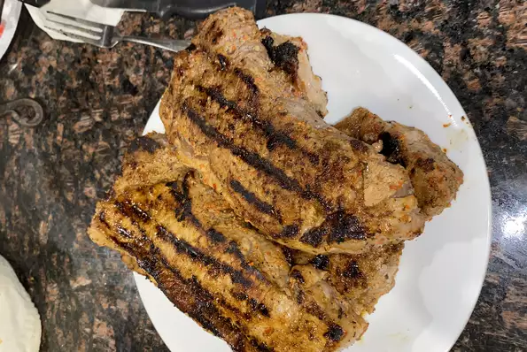

Steak Jalapeno Recipe

Description
This recipe will teach you on how to make a good jalapeno steak and to make sure that it
tastes good for everyone in your household.
Ingredients
- 4 jalapeno peppers, stemmed
- 4 cloves garlic, peeled
- 1 ½ teaspoons cracked black pepper
- 1 tablespoon coarse salt
- ¼ cup lime juice
- 1 tablespoon dried oregano
- 1 ½ pounds top sirloin steak
Recipe Steps
-
Combine jalapenos, garlic, pepper, salt, lime juice and oregano in a blender.
Blend until smooth.
-
Place steak in a shallow pan or large resealable plastic bag.
Pour jalapeno marinade over the steak, and turn to coat.
Cover pan or seal bag; marinate in the refrigerator 8 hours or overnight.
-
Preheat an outdoor grill for high heat, and lightly oil the grill grate.
-
Drain and discard marinade. Grill steak 5 minutes per side, or to desired doneness.